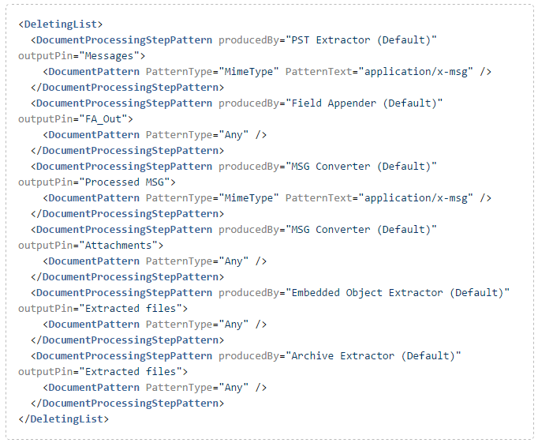
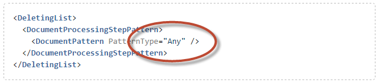
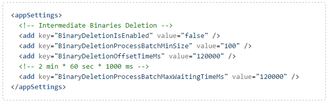

Use Local processing to reduce your network load (no file copying from shared location to processing node and back for local actions) and database load (local actions and documents generally do not leave the processing node and are not stored in the database).
Instructions
Save the Processing Definition XML file (\\ZyLAB\EDiscovery\Ediscoveryservice\DefaultProcessDefinition.xml) to disk.
Modify DeletingList.

Load the XML file back on Matter or Global level.
Notes
Local actions have priority over global actions.
If processor is not available on the processing node (availability can be changed via the Cluster tab), the action will become global. If a processor is disabled for the node while a job is running, all new actions for that processor on that node will be scheduled as global. However, local actions for disabled processors that are currently running will not be affected.
If a local action fails, it will be stored in the database with the source document.
In case of a configuration with more than one processing node, it is not recommended to use processing rules with DeletingList that will match any documents:

All documents from the collection location will be processed on a single node (which can be considerably slower compared to a regular workflow).
Local action IDs are local to the processing node and starts with 10000000000000000. This makes it easy to distinguish between local and global actions when analyzing the log files. However, when a local action fails, it will be stored in the database with normal ID.
Next options became obsolete in DataService config:

Configuration value of BinaryDeletionIsEnabled setting is not used in code anymore. Currently it is always false (related code was not yet removed to reduce possible impact). Because of this aspect, the rest of the settings are also ignored.
In the Legal Processing user interface you will see only global actions. For example, if PST file is collected and PST Extractor is configured to be local, there will be no MSG Converter actions in Action tab for this job.